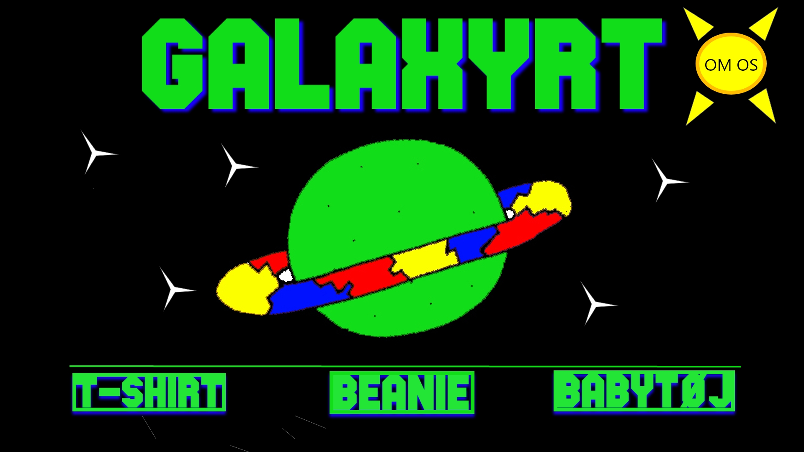
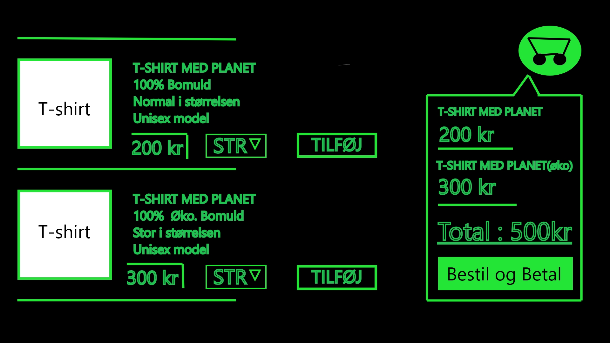

På temaet "Grundlæggende UX" fik vi indsigt i hvad en god brugeroplevelse er på web. Jeg har lært om hifi og lowfi prototype, som min gruppe og jeg brugte i Tema 5, hvor vi lavede protoyper af den nye hjemmeside. Vi kunne have valgt at lave en lowfi, som er en mindre detaljeret prototype, som er god at lave, hvis man er tidspresset. Jeg lærte om research metoder som Desk research, survey, interview og Observations. Vi prøvede dem alle sammen, men jeg tog udgangspunk i survey, interview og desk reserch, fordi de gav de bedste svar, som kunne overføres til min prototype. Jeg fandt frem til målgrupperne for min butik, mine salgsargumenter, produktegenskaber og fordele fra kunder. Jeg fik lavede Copy og Micro Copy til min hjemmeside, som skulle sælge produktet. For at finde frem til designet af min website lavede jeg et moodboard og et styletile. Jeg tegnede en lowfi prototype, for at få et hurtigt overblik og tegn ideen. Den blev senere til en hifi prototype, hvor jeg så implementeret desginet fra Styletile og moodboard. Efter jeg var færdig med prototype lavede jeg Art museum og heat map med min gruppe hvor de kunne fortælle hvad de kunne lide og hvad de undrede sig over. Senere skulle jeg pitche min ide foran min gruppe, som også skulle prøve min hjemmeside af.

